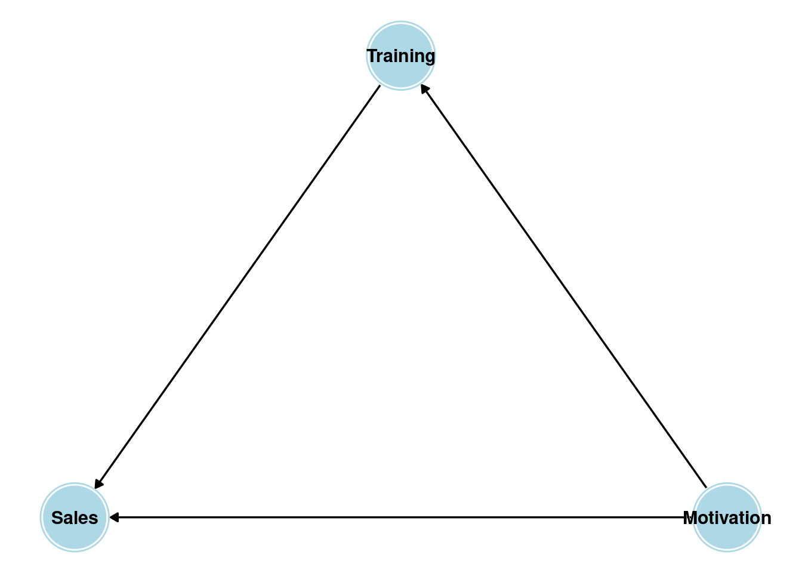
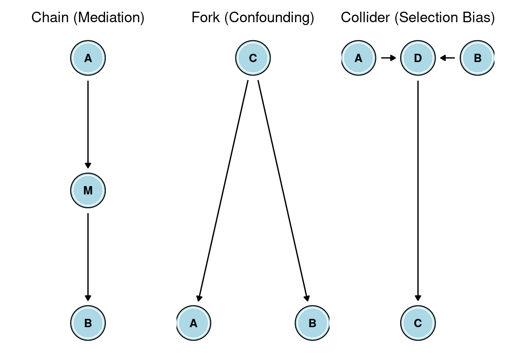
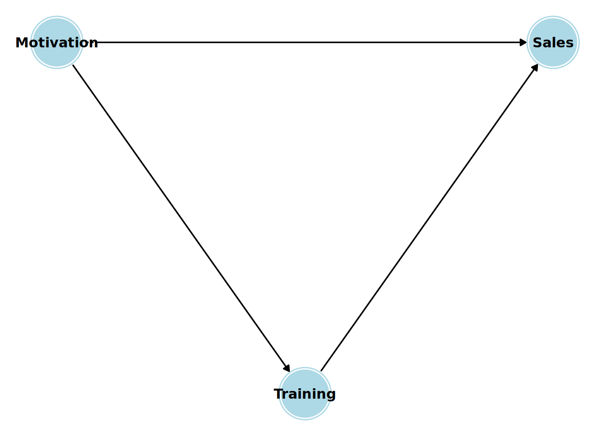
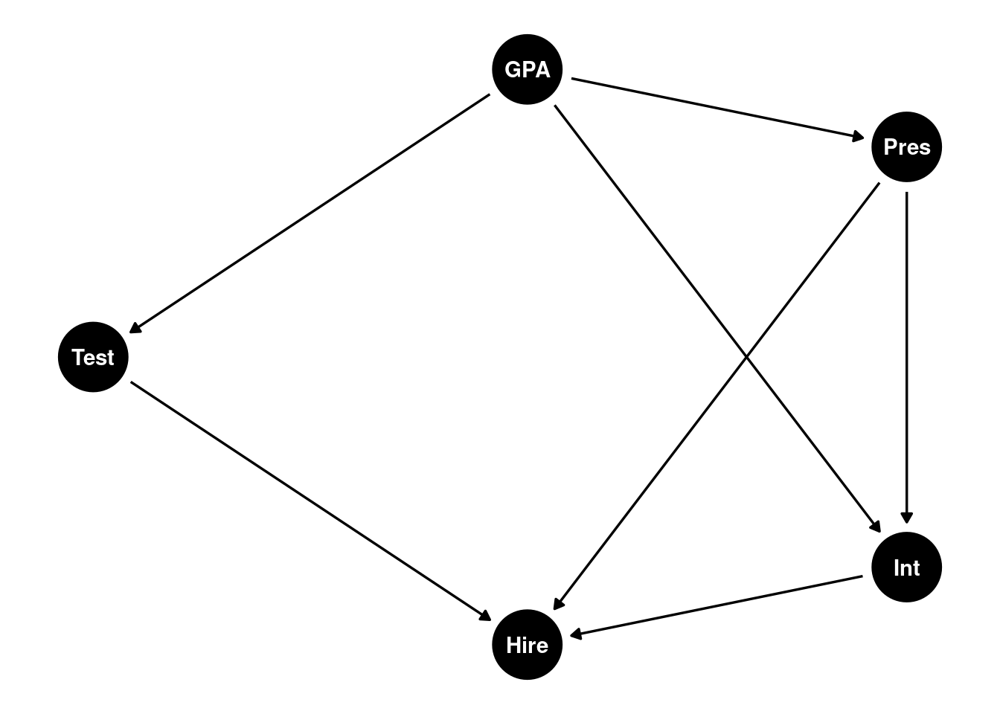
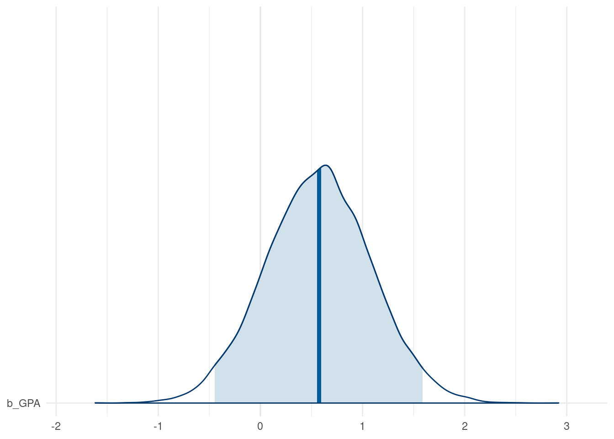
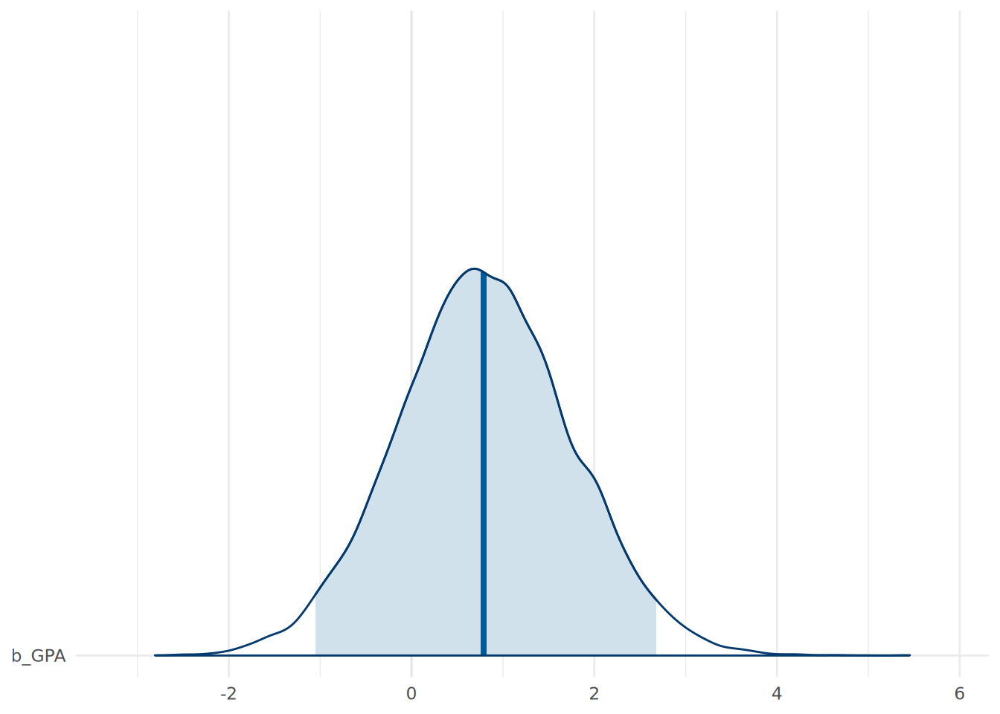
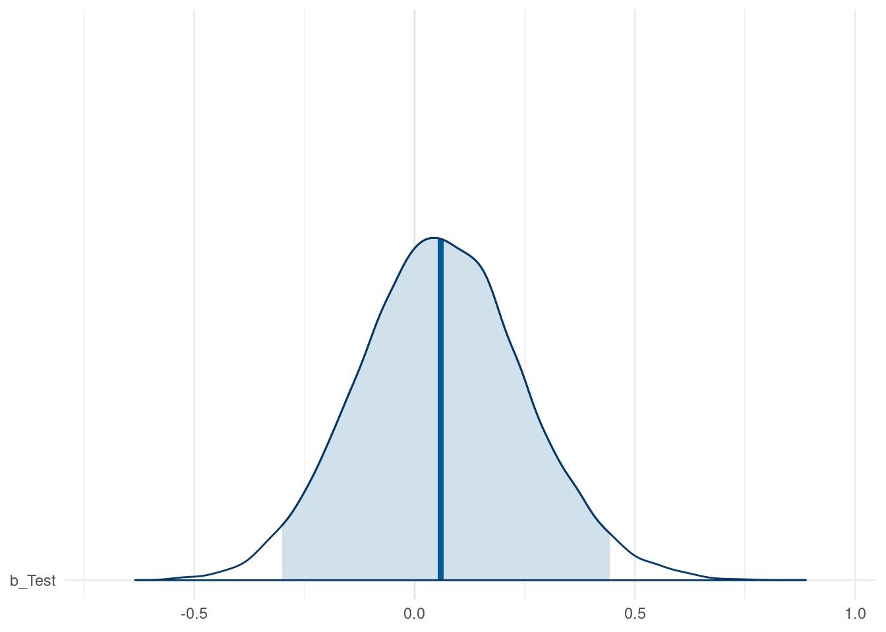

15 Causal Inference - Moving From Association to Causation
This book is about statistics, and over many previous chapters we have covered numerous classical and modern approaches to explanatory statistical modeling. Historically, statisticians have been careful to view such models as descriptive tools for summarizing associations in data, rather than as tools for making causal claims. In our previous chapters, when interpreting the output of models, our language has been very intentional in relation to this. We have used language rooted in description and association, such as ‘x has an effect on y’ or ‘a change in x is associated with a change in y’. We have deliberately avoided using phrases with action verbs like ‘a change in x causes a change in y’ or ‘a change in x drives a change in y’. This caution reflects a long-standing principle in statistics, and one which has become a very popular refrain over the years: association (or correlation) does not imply causation.
In reality, however, most of us who practice statistics do not employ our toolkit and skillset to simply describe associations. We want to understand the dynamic mechanisms of the problem we are interested in, and often that means we want to understand whether causal relationships exist. For example, we may want to know if a new employee benefit has caused an increase in employee satisfaction, or if a change in the structure of an education program has caused better learning outcomes. Moreover, when our leaders and clients want us to help them make decisions, they often have questions like ‘Why is this happening?’ or ‘What would happen if…?’. Answering questions like these requires inferring causality. Realistically, if an analyst is simply not willing to have an opinion on questions of causality, their skills may be of limited value to decision-makers.
But inferring causality is hard and requires a lot of intellectual discipline. In the modeling examples and exercises in previous chapters of this book, we did not have this discipline in mind. Our focus was on the theory, execution and direct interpretation of statistical methods. In our quest for associations, we threw many variables into models without much thought about the role each variable might play in the causal mechanics of the problem we were trying to solve. As we will learn in this chapter, this is not a good practice when our goal is to infer causality. Causal inference requires careful thinking about the data generating process, the role of confounding variables, and the assumptions we are making when we use statistical models to find evidence to support or disregard a causal hypothesis.
Over the last few decades there has been a growing body of work in statistics, psychology, clinical medicine and related fields that has developed rigorous frameworks and methods for causal inference. This chapter introduces some of these key concepts and methods with a focus on how they can be applied in practice. We will spend the first part of the chapter introducing the fundamental theories underlying causal inference, and then we will look at the toolkit of methods that can be used to infer causality from data. Finally, we will use a walkthrough example to illustrate how this toolkit can be applied in practice.
15.1 Underlying theoretical frameworks for causal inference
The modern field of causal inference has been primarily shaped by two complementary frameworks. Throughout this chapter, we will draw on the strengths of both.
The Rubin causal model (or Potential Outcomes framework): Popularized by Donald Rubin (Rubin (1974)), this model is rooted in the language of experiments. It forces us to think about the “potential” state of the world under different scenarios. For each individual, we imagine two potential outcomes: the outcome if they receive a “treatment” (e.g., attending a training program) and the outcome if they receive the “control” (e.g., not attending). The causal effect is the difference between these two potential outcomes. The core difficulty, which we will explore, is that we can only ever observe one of these outcomes for any given individual. This is what is called the “Fundamental Problem of Causal Inference” (Holland (1986)). This framework is incredibly useful for defining what a causal effect is with mathematical precision.
The structural causal model (SCM): Championed by Judea Pearl (Pearl (2000)), this framework uses the intuitive language of graphs to represent our causal assumptions and hypotheses. Through using Directed Acyclic Graphs (DAGs), we can visualize the assumed data-generating process. By drawing nodes (variables) and arrows (causal effects), we create a causal map of the system we are studying. This map then provides us with a clear, visual guide for how to analyze our data. It tells us which variables we must control for, which we must not control for, and whether our causal question is even answerable with the data we have.
While historically there has been some friction between these two philosophies, they are now largely seen as two sides of the same coin. The RCM provides the rigorous definition of a causal effect, while the SCM give us the tools to think about the complex system of variables in which that effect is embedded. In this chapter, we will use the RCM to understand what we’re trying to estimate and we will use the SCM to figure out how to estimate it from data. For a more in-depth treatment of the Rubin causal model, see Imbens and Rubin (2015). For a more in-depth treatment of the Structural causal model, see Pearl, Glymour, and Jewell (2016) or Pearl and Mackenzie (2019). Brumback (2022) and McElreath (2020) are also excellent resources for learning about how to apply causal inference techniques in settings involving observational data.
15.2 The Rubin causal model (RCM)
Throughout this book we have looked at statistical effects, but we have only defined these in the context of associations between variables. For example, in a linear regression model, we use coefficients to describe the effect of a one unit change in an input variable on the outcome variable, assuming no change in the other input variables. A natural question that arises from this is ‘how much, if any, of this effect is causal?’. For this, we need a definition of what we mean by a “causal effect.” The most intuitive and mathematically rigorous way to think about this is through the Rubin causal model (RCM).
15.2.1 Treatment effects
Imagine a single manager of a sales team in a company, let’s call her Jane. Jane has the option to volunteer for a new management training program. We are interested in the causal effect of this new program on the sales of Jane’s team. Let’s denote the treatment, which is participation in the training program, as \(T\). Jane can either receive the treatment (\(T = 1\)) or not receive it (\(T = 0\)).
Under RCM, we imagine that for Jane, there exist two potential outcomes right before her decision is made about her attendance at the training:
- \(Y(1)\): This is Jane’s team’s sales if she were to attend the training program.
- \(Y(0)\): This is Jane’s team’s sales if she were not to attend the training program.
The individual treatment effect (ITE) for Jane is simply the difference between these two potential outcomes—that is:
\[ \mathrm{ITE} = Y(1) - Y(0) \]
If Jane’s team’s sales figure would be $2.1 million if she were to attend the training (\(Y(1) = 2.1\)) and if it would be $1.6 million if she were not to attend (\(Y(0) = 1.6\)), then the ITE of the training for Jane is $0.5 million. Her attendance at the training caused a $500,000 increase in her team’s sales.
But in the real world, we can never observe both potential outcomes for the same individual at the same time. Jane will either attend the training or she will not.
- If she attends the training (\(T = 1\)), we observe \(Y(1)\). \(Y(0)\) is unobserved; it is a counterfactual. We know what her team’s sales figure is now that she has attended, but we will never know what it would have been had she not attended.
- If she does not attend the training (\(T = 0\)), we observe \(Y(0)\). \(Y(1)\) is unobserved; it is also a counterfactual. We know what her team’s sales figure is now that she has not attended, but we will never know what it would have been had she attended.
This real life issue is called the Fundamental Problem of Causal Inference. Causal inference is, in essence, a missing data problem. For every single person in our study, at least half of the crucial information (one of their potential outcomes) is missing. The table below illustrates this. The question marks represent the unobservable, counterfactual outcomes.
| Employee | Attended Training (T) | Outcome if Trained (Y(1)) | Outcome if Not Trained (Y(0)) | Observed Outcome (Y) |
|---|---|---|---|---|
| Jane | 1 | $2.1m | ? | $2.1m |
| David | 0 | ? | $3.1m | $3.1m |
| Suraya | 1 | $1.2m | ? | $1.2m |
| Zubin | 0 | ? | $2.9m | $2.9m |
Now we know that we can never calculate the individual treatment effect for any single person. But as statisticians, we could instead aim for the next best thing. We could aim to estimate the average treatment (ATE) effect across a population of individuals. This is the mean (or expected) difference in potential outcomes if everyone in the population were to receive the treatment versus if everyone were to receive the control. Formally, it is defined as:
\[ \mathrm{ATE} = E[Y(1) - Y(0)] \]
If we estimate the ATE of our management training to be $0.6 million, it means that, on average, the program increases average team sales by that amount. This is exactly the kind of information a decision-maker needs to evaluate the program’s worth. For example, they can compare the ATE to the cost of running the training to see if the investment has a positive financial return.
But, again, in real life it is usually the case that not everyone is treated. Our training program is optional it’s likely to everyone will attend. Therefore, it is more insightful for us to determine the average treatment effect for those who attend the training. We want to determine the average treatment effect for the treated, known as the ATT:
\[ \begin{aligned} \mathrm{ATT} &= E[Y(1) - Y(0) \mid T=1] \\ &= E[Y(1) \mid T=1] - E[Y(0) \mid T=1] \end{aligned} \]
The question now becomes: how can we estimate the ATT when we can’t see Y(0) for the people who have been treated?
15.2.2 Naive comparisons and counfounding
The simplest thing we could do is use the data we have, and calculate the difference in the average observed outcomes between the two groups: treated and not treated. This is called the naive comparison (NC).
\[ \mathrm{NC} = E[Y(1) \mid T=1] - E[Y(0) \mid T=0] \]
Let’s examine the formal mathematical difference between the naive comparison and the ATT.
\[ \begin{aligned} \mathrm{NC} - \mathrm{ATT} &= E[Y(1) \mid T=1] - E[Y(0) \mid T=0] - \\& \mathrm{\ \ \ \ \ } (E[Y(1) \mid T=1] - E[Y(0) \mid T=1]) \\ &= E[Y(0) \mid T=1] - E[Y(0) \mid T=0] \end{aligned} \]
This is known as the bias of the naive comparison as an estimator for the ATT. If this bias is zero, then the naive comparison is an unbiased estimator of the ATT. If this bias is not zero, then the naive comparison is a biased estimator of the ATT. This bias term can be non zero for a variety of reasons, but the most common is confounding1. Confounding is the presence of a third variable (or set of variables) that is a common cause of both the treatment and the outcome. This common cause creates a spurious association between the treatment and the outcome that is not causal.
Returning to the management training example, the managers who volunteer for training (\(T=1\)) might be more ambitious, more motivated, and already better managers than those who do not (\(T=0\)). Therefore, even if nobody got the training, the treatment group’s teams would likely have higher sales anyway. That is, \(E[Y(0) \mid T=1] > E[Y(0) \mid T=0]\). This difference is confounding. The ambition and motivation of the managers is a common cause of both their decision to take the training and their team’s higher sales.
The naive comparison mixes the true causal effect of the training (ATT) with this pre-existing bias. Our entire goal in causal inference is to find a way to eliminate this bias and isolate the true ATT. The most effective (but, sadly, usually the least practical) way to do this is through a randomized controlled trial (RCT).
In an RCT, the researchers randomly assign individuals to either the treatment or the control group. Because the assignment is random, it cannot be correlated with any pre-existing characteristics of the individuals. Over large numbers, randomization ensures that, on average, the treatment group and the control group are identical in every way before the treatment is administered. Under these conditions, the bias term is zero and the naive comparison is equal to the ATT.
15.2.3 Causal inference from observational data
Unfortunately, in psychology, sociology, human resources and other people-related fields we can’t always run an RCT. It might be inequitable (we can’t randomly give some employees a benefit that we don’t give others), impractical (we can’t randomly assign a new corporate culture to half the company), or impossible (we can’t randomly assign personality traits). We are more often than not working with observational data, where people have already selected their own “treatments”.
To estimate a causal effect from such data, we need to try to emulate a randomized trial with statistics. To do this, we must rely on a set of critical, untestable assumptions. Conditional on these assumptions, we can recover unbiased estimates of causal effects. Let’s review these assumptions.
First, the Stable Unit Treatment Value Assumption (SUTVA) has two parts:
No interference: The potential outcomes for any individual are not affected by the treatment assignments of other individuals. In our management training example, this means that Jane’s team’s sales figure doesn’t change if her colleague David attends the training. This assumption is often violated in social settings. If Jane and David both attend, learn new techniques and subsequently collaborate, their combined effect might be larger than the sum of their individual effects (positive interference). Conversely, if both their teams are competing for the same pool of customers, David attending the training without Jane attending might negatively affect Jane’s outcome (negative interference).
Consistency: The observed outcome for an individual who received the treatment \(T\) is equal to their potential outcome under that specific treatment, \(Y(T)\). This sounds trivial, but it implies that the treatment is well-defined. “Management training” must mean the same thing for everyone. If part of Jane’s training is a follow up on how she passes on her learning to her team, but David is not given this follow up, then the treatment is not consistent between them. Their potential outcomes under the treatment are not comparable.
Second, the Ignorability (or Exchangeability or Unconfoundedness) assumption is our attempt to statistically deal with confounding. Formally, it states that, conditional on a set of pre-treatment variables \(X\), the treatment assignment is independent of the potential outcomes. This is formally stated as2:
\[(Y(1), Y(0)) \perp T \mid X\]
That is, once we account for the variables in \(X\), the group that received the treatment and the group that did not are, on average, comparable, as if the treatment had been randomly assigned within each level of \(X\).
In our training example, we suspected that “motivation” might be a confounder. Managers’ motivation (\(X\)) affects both their likelihood of taking the training (\(T\)) and their team’s sales (\(Y\)). Ignorability assumes that if we look only at a group of managers with the same level of motivation, then within that group, the decision to take the training was essentially random with respect to their potential team sales. By conditioning on (or controlling for) all possible common causes of the treatment and the outcome—the set of confounders \(X\)—we hope to make the bias disappear. This is why it is sometimes called “conditional exchangeability”. We don’t believe the entire treatment and control groups are exchangeable, but we are willing to assume they are exchangeable with each level of \(X\).
Of course the challenge here is that we must identify and measure all the important confounders. If there is a confounder that we did not measure or include in our set \(X\) (e.g., the managers’ level of prior experience), then this assumption will be violated, and our causal estimate will be biased due to unmeasured confounding. This is the biggest challenge of causal inference on observational people data. Many potential confounders are unknown, unmeasurable or both.
Third, the Positivity (or Overlap) assumption requires that for every combination of our confounding variables \(X\) in our population, there is a non-zero probability of being both treated and untreated. This is formally stated as:
\[ \begin{aligned} 0 < P(T=1 \mid X=x) < 1 \\ 0 < P(T=0 \mid X=x) < 1 \end{aligned} \]
for all \(x \in X\). This means that there are no subgroups of people defined by our confounding variables who always or never receive the treatment. For example, if one of our confounding variables was ‘years experience’, and our management training was only ever offered to managers with more than 5 years of experience, then for managers with less than 5 years experience, \(P(T=1 \mid X) = 0\). We have no data on what would happen if a junior manager took the training, so we cannot estimate the effect for them. There is no “overlap” in the data for that subgroup.
If positivity is violated, we simply cannot estimate the ATT for some groups associated with our confounding variables, and we would have to rethink our approach to the analysis.
15.2.4 The ‘boobytraps’ of causal inference
Armed with Rubin’s causal model and the key assumptions above, we can now articulate the common types of problems we might encounter in attempting to infer causality between a treatment and an outcome. All of these “boobytraps” relate to how we handle other variables outside the treatment variable \(T\) and the outcome variable \(Y\) in different situations.
Confounding: As we have seen, this is a central problem. A third variable (or set of variables) \(X\) is a common cause of both the treatment \(T\) and the outcome \(Y\). The relates to the assumption of ignorability. To obtain an unbiased estimate of the ATT, we must identify and condition on all confounding variables. In our management training example, if we fail to account for the managers’ motivation levels, which affects both their likelihood of taking the training and their team’s sales, our estimate of the training’s causal effect will be biased.
Selection Bias: While confounding is a form of selection bias, this term specifically refers to a situation where the sample is selected (or the analysis is conditioned) based on factors related to the outcome. This relates to the assumption of positivity. If certain types of individuals are systematically excluded from the analysis based on their factors related to the outcome, it can bias our estimates. For example, if we only analyze data from managers who had high sales, we might overestimate the training’s effectiveness because we are ignoring those who had low sales.
Mediation: In understanding causal mechanisms, it is critical to consider if a causal effect is operating via some intermediate variables or mediators. This relates to the assumption of SUTVA. If we condition on a mediator variable that lies on the causal path from treatment to outcome, we can block part of the causal effect we are trying to estimate. For example, imagine if the training results in managers teaching new sales techniques to their teams, which then impacts sales. If we condition our analysis on the specific sales techniques used by the teams, we will underestimate the total causal effect of the training on sales.
The RCM gives us a clear language to define the causal effects we want to estimate. The assumptions of SUTVA, Ignorability, and Positivity define the “rules of the game” for when we can legitimately estimate those effects from observational data without bias. The challenge, however, is that the crucial assumption of Ignorability depends on identifying the correct set of confounding variables X. How do we do that? Simply throwing every variable we have into a regression model is not the answer and, in fact, it usually makes things worse.
15.3 The structural causal model (SCM)
The RCM is powerful for formally defining causal effects, but it only takes us so far. It tells us we need to condition on all confounders, but it doesn’t tell us how to identify them. For this, we will need to incorporate our subject-matter knowledge and our theories about how the system we are researching actually works. We can express our causal theories using the structural causal model (SCM). Graphs are the cornerstone of the SCM. They are a visual language for expressing our assumptions about the causal relationships between variables. By representing our assumptions in a graph, we can use a clear set of rules to determine the statistical implications of those assumptions and to estimate causal effects.
15.3.1 Directed Acyclic Graphs (DAGs)
Like all graphs, DAGs consist of two simple components:
Nodes (or Vertices): These represent variables. They can be anything we can measure or imagine: a treatment (e.g., training), an outcome (e.g., sales), and any other variables that are believed to play a role in a problem (e.g., motivation).
Edges (or Arrows): These are directed arrows that connect two nodes. An arrow drawn from node A to node B (A -> B), means we are assuming that variable A has a direct causal influence on variable B. The arrow represents a hypothetical intervention: if we were to intervene and change the value of A, we would expect to see a change in the value of B. “Direct” here means not mediated by any other variable already in the graph.
DAGs must be acyclic. This means there are no loops in the graph. You cannot start at a node, follow the direction of the arrows, and end up back at the same node. This makes sense in most cross-sectional research studies, where it’s assumed that causation flows in one direction at any single point in time.
Let’s look at the simple example of our sales manager training program. Let’s say we believe that attendance at the training program has a direct causal effect on the sales of the manager’s team. Let’s also say we believe that a manager’s pre-existing motivation has a direct causal effect on both their decision to sign up for the training and their team’s sales. The DAG for this causal theory is shown in Figure 15.1.
This simple graph encodes several causal beliefs: 1. Motivation has a direct causal effect on Training (more motivated managers are more likely to sign up). 2. Motivation has a direct causal effect on Sales (more motivated managers lead their teams to higher sales figures). 3. Training has a direct causal effect on Sales (this is the effect we want to estimate). 4. There are no other common causes of any two variables in the graph. 5. Sales does not have a direct causal effect on Training (the outcome doesn’t affect the treatment).
This DAG is our causal model. It is not derived from the data; it is imposed upon it by our expert knowledge and beliefs. The DAG forces us to be transparent about our assumptions, which can then be analyzed, critiqued or improved.
15.3.2 DAG paths and the three fundamental structures
The reason DAGs are so useful is that they provide rules for how statistical associations flow between variables. An association between two variables, X and Y, exists if there is an open (or unblocked) path between them in the DAG. A direct causal effect is one source of association, but there are others. By understanding the three fundamental structures that can exist between variables in a DAG, we can create a system through which we can identify open non-causal paths. Each of these structures relate to the “boobytraps” we discussed earlier: mediation, confounding and selection bias. They can be seen in Figure 15.2.

Referring to Figure 15.2:
Mediation is represented by a ‘chain’ structure. This means A has a direct causal effect on M, and M has a direct causal effect on B. M is a mediator variable. In a chain, there is a clear causal path from A to B. Therefore, A and B will be statistically associated. But if we condition on the mediator M, we block the flow of association between A and B. For example, if we believe
Motivation -> Job Satisfaction -> Job Performance, then if we try to estimate the causal effect ofMotivationonJob Performancewe should not includeJob Satisfactionin our statistical model. If we do, we will have a biased estimate.Confounding is represented by a ‘fork’ structure. This means C is a common cause of both A and B. In this fork, there is no causal path from A to B. However, because they share a common cause, information flows from C to A and from C to B, creating a spurious (non-causal) association between A and B. If we were to naively correlate A and B, we would find an association, not because A has a direct causal effect on B, but because C has a direct causal effect on both. The non-causal path from A to B is called a ‘backdoor’ path, because A has an edge going into it rather than coming out of it. To block this backdoor path, we must condition on the common cause, C. For example, if we believe
Training <- Motivation -> Sales, then to estimate the causal effect ofTrainingonSales, we must includeMotivationin our model. If we leave it out, we will have a biased estimate.Selection bias is represented by a ‘collider’ structure. This structure means A and B are both independent causes of a third variable, D. The arrows “collide” at D. In a collider structure, if A and B are independent to begin with, there is no open path between them. The collider D naturally blocks the flow of association. However, if we condition on the collider D, we open the path and create a spurious association between A and B where none existed before. For example, if we believe
Knowledge -> Being Hired <- Interpersonal Skills, then in the general population,KnowledgeandInterpersonal Skillsare uncorrelated. But if we look only at only those who were hired, then within that selected group,KnowledgeandInterpersonal Skillscan become negatively correlated. Conditioning on the common effect (the collider) induces an association. Moreover, if a variable is a descendant of a collider (i.e., it is on a chain emanating from the collider, such as our variableE), conditioning on that descendant also opens the path.
This leaves us with three critical rules for how associations flow through a DAG:
- Conditioning on the middle variable in a chain blocks the path.
- Conditioning on the common cause in a fork blocks the path.
- Conditioning on a collider (or a descendant of a collider) opens a path.
15.3.3 D-separation and the backdoor criterion
Our three rules form the basis of a concept called d-separation (for “directional separation”). Two variables in a DAG, X and Y, are said to be d-separated if there is no open path between them. If they are d-separated, the causal structure represented by the DAG implies that they should be statistically independent. If they are not d-separated (they are “d-connected”), they should be statistically associated.
The most important application of these rules is in finding a set of variables to control for to estimate a causal effect. Let’s say we want to estimate the causal effect of a treatment, T, on an outcome, Y. That is, we are interested in the direct causal path from T to Y.
The statistical association we measure between T and Y in our data can be a mixture of the true causal effect and any spurious associations from non-causal paths. Our goal is to isolate the causal path. To do this, we need to block all the open non-causal paths between T and Y, without blocking the causal path itself. This means we need to identify and block any backdoor path which is open. A backdoor path is any path that starts with an arrow pointing into T. For example, in our motivation fork (Training <- Motivation -> Sales), the path from Training to Motivation to Sales is a backdoor path. It creates a spurious association that we must block.
This leads us to the backdoor criterion, a powerful graphical test for choosing a sufficient set of control variables (an “adjustment set”) for testing a causal effect. Under the backdoor criterion, a set of variables Z is a sufficient adjustment set for estimating the causal effect of T on Y if two conditions are met:
- No variable in Z is a descendant of T (we don’t control for mediators or other variables caused by the treatment).
- The variables in Z block every backdoor path between T and Y.
If we can find a set of variables Z that satisfies the backdoor criterion, then we can estimate the causal effect of T on Y by conditioning on Z. In practice, this means including Z along with T as input variables in a regression model.
Let’s look at a specific example in order to see this criterion in action.
15.3.4 Example of applying the backdoor criterion
A company runs a selection process for hiring new graduates. The process involves a test, a one-on-one interview and a presentation to a panel. We have scoring data on the all of these, as well as data on the graduates’ academic performance (GPA). We are interested in determining the causal effect of the test score (our treatment) on the likelihood of being hired (our outcome). We have the following causal model in mind:
- The test, the interview and the presentation all have direct causal effects on the hiring decision.
- The presentation has a direct causal effect on the interview (because the interview is conducted by a member of the presentation panel)
- The academic ability of the graduate has a direct causal effect on their test, interview and presentation.
- There are no other direct causal effects.
The DAG for this causal model is shown in Figure 15.3.

Let’s identify all the paths between Test and Hire and use the backdoor criterion find a sufficient adjustment set using the backdoor criterion.
- Path 1 (The Causal Path):
Test -> Hire. We want to keep this path open. It is causal because it flows in the direction of the arrows from treatment variable to outcome variable. - Path 2 (A Backdoor Path):
Test <- GPA -> Int -> Hire. This is a classic confounding path throughGPA. It’s a fork, with a chain fromGPAtoHire. To block it, we have two options. We can condition on the common causeGPA, and then we do not need to condition onIntbecause by conditioning onGPAwe have already blocked the backdoor path. Alternatively, we can condition onIntto black the path through the chain. - Path 3 (Another Backdoor Path): `
Test <- GPA -> Pres -> Hire. This is another backdoor path throughGPAandPres. It’s another fork followed by a chain. Conditioning onGPAwill also block this path, or alternatively so will conditioning onPres. - Path 4 (Another Backdoor Path):
Test <- GPA -> Pres -> Int -> Hire. This is yet another backdoor path throughGPA,PresandInt. It’s another fork followed by a longer chain. Conditioning onGPAwill also block this path, as will conditioning onPresorInt.
This provides us with two possible adjustment sets for determining the causal effect of Test on Hire:
{GPA}: By conditioning onGPAalone, we block all backdoor paths (Paths 2, 3 and 4) while keeping the causal path (Path 1) open.{Int, Pres}: By conditioning on bothIntandPres, we also block all backdoor paths while keeping the causal path open.
This means that if we want to run a regression model to determine the causal effect of Test on Hire, we can either include GPA as a control variable, or we can include both Int and Pres as control variables. Either approach will give us an unbiased estimate of the causal effect of Test on Hire, conditional on our DAG.
This example illustrates the power of DAGs. Without drawing the graph and applying the backdoor criterion, a researcher might be tempted to control for everything they measured. The DAG shows that this “kitchen sink” approach to regression is not just unnecessary, but it can lead to major errors in inferring causal effects. DAGs provides a principled, theory-driven way to construct regression models.
15.4 Causal inference in R
In R, the dagitty package allows you to specify a DAG using a simple text-based syntax. Once specified, you can query the DAG to find parents, children, ancestors, descendants, identify instrumental variables, and, most importantly, find adjustment sets using the backdoor criterion. It can also list the “testable implications” of your DAG-—-that is, the conditional independencies that should hold true in your data if your causal model is correct, which you can verify.
The ggdag package is built on top of ggplot2 and works seamlessly with dagitty objects. It provides an easy and highly customizable way to create visualizations of your DAGs. It can automatically highlight paths, adjustment sets, and other features, making it a very helpful tool for both analysis and communication.
Let’s use our selection process example from Section 15.3.3 as a walkthrough example to illustrate how to do causal inference in R using the dagitty and ggdag packages.
15.4.1 Walkthrough example
The selection data set contains data related to the hiring process for 70 candidates in a graduate hiring program. The data contains the following variables:
Hire: A binary variable indicating whether the candidate was hired (1) or not (0).Test: The candidate’s score out of a maximum of 15 on a written test.Int: The candidate’s rating from a one-on-one interview, on an integer scale from 1 (Low) to 5 (High).Pres: The candidate’s average rating from a presentation to a panel, on an scale from 1 (Low) to 5 (High).GPA: The candidate’s undergraduate Grade Point Average (GPA), on a scale from 1.0 to 5.0.
Let’s take a quick look at the data.
# load the selection data set
url <- "https://peopleanalytics-regression-book.org/data/selection.csv"
selection <- read.csv(url)
# view the first few rows of the data
head(selection) GPA Test Pres Int Hire
1 3.3 10 3.6 3 1
2 2.6 8 3.9 2 1
3 3.0 9 3.1 4 1
4 3.6 9 2.5 4 1
5 3.1 9 3.6 3 1
6 3.5 13 2.8 3 0Before we define a causal model to work with, let’s look at what a ‘naive’ analysis would look like. We can run a simple Bayesian logistic regression predicting Hire from Test alone.
library(brms)
# run simple Bayesian logistic regression
naive_model <- brm(
formula = Hire ~ Test,
data = selection,
family = bernoulli(),
chains = 4,
iter = 10000,
seed = 123,
save_pars = save_pars('all')
)We can now take a look at our posterior coefficients for Test, as in Figure 15.4.
library(bayesplot)
# view posterior for Test coefficient
mcmc_areas(
as.matrix(naive_model),
pars = "b_Test",
prob = 0.95
) +
theme_minimal()
Test from a naive Bayesian logistic regression predicting Hire from Test alone.
This naive model suggests a high probability (86.9%) that the test has a positive effect on the log odds of being hired, giving us a degree of confidence that the test is providing a meaningful contribution to the hiring decision. However, we have no idea how much of this effect is a direct causal effect. There may be confounding variables biasing this estimate. To determine what variables to control for, we need to define our causal model using a DAG.
We have a hypothesized causal model for how these variables relate to each other, as shown earlier in Figure 15.3. We want to estimate the causal effect of Test on Hire. According to our earlier manual backdoor analysis, we should find that we are able to do this by controlling for either GPA alone, or for both Int and Pres.
15.4.2 Specifying and visualizing the DAG
The syntax for defining a DAG using dagitty is straightforward. We define the nodes and edges in a string format. The treatment (exposure) and outcome variables can be specified using special tags.
# Define the selection DAG
library(dagitty)
selection_dag_string <- "dag {
GPA
Hire [Outcone]
Pres
Int
Test [Exposure]
Hire <- Pres
Hire <- Int
Hire <- Test
Int <- Pres
Pres <- GPA
Int <- GPA
Test <- GPA
}"Alternatively, we can use the dagify function from ggdag to create the same DAG string using a formula syntax.
# define using dagify
library(ggdag)
(selection_dag <- dagify(
Hire ~ Pres + Int + Test,
Int ~ Pres + GPA,
Pres ~ GPA,
Test ~ GPA,
labels = c(Hire = "Hire", Pres = "Pres", Int = "Int", Test = "Test", GPA = "GPA"),
exposure = "Test",
outcome = "Hire"
))dag {
GPA
Hire [outcome]
Int
Pres
Test [exposure]
GPA -> Int
GPA -> Pres
GPA -> Test
Int -> Hire
Pres -> Hire
Pres -> Int
Test -> Hire
}The ggdag package makes plotting this DAG very easy, as in Figure 15.5.
library(ggplot2)
ggdag(selection_dag) +
theme_dag() 
To control the positioning of the nodes, we can specify relative coordinates in the DAG string or use the coords argument in dagify. For example, to replicate the positioning as in Figure 15.3, we can do the following:
(selection_dag <- dagify(
Hire ~ Pres + Int + Test,
Int ~ Pres + GPA,
Pres ~ GPA,
Test ~ GPA,
labels = c(Hire = "Hire", Pres = "Pres", Int = "Int", Test = "Test", GPA = "GPA"),
exposure = "Test",
outcome = "Hire",
coords = list(
x = c(Hire = 0, Pres = 2, Int = 1, Test = 0, GPA = 2),
y = c(Hire = 0, Pres = 0, Int = 1, Test = 2, GPA = 2)
)
))dag {
GPA [pos="2.000,2.000"]
Hire [outcome,pos="0.000,0.000"]
Int [pos="1.000,1.000"]
Pres [pos="2.000,0.000"]
Test [exposure,pos="0.000,2.000"]
GPA -> Int
GPA -> Pres
GPA -> Test
Int -> Hire
Pres -> Hire
Pres -> Int
Test -> Hire
}We can convert our dagitty object into a tidy data format.
(selection_dag_tidy <- ggdag::tidy_dagitty(selection_dag))# A DAG with 5 nodes and 7 edges
#
# Exposure: Test
# Outcome: Hire
#
# A tibble: 8 × 9
name x y direction to xend yend circular label
<chr> <int> <int> <fct> <chr> <int> <int> <lgl> <chr>
1 GPA 2 2 -> Int 1 1 FALSE GPA
2 GPA 2 2 -> Pres 2 0 FALSE GPA
3 GPA 2 2 -> Test 0 2 FALSE GPA
4 Hire 0 0 <NA> <NA> NA NA FALSE Hire
5 Int 1 1 -> Hire 0 0 FALSE Int
6 Pres 2 0 -> Hire 0 0 FALSE Pres
7 Pres 2 0 -> Int 1 1 FALSE Pres
8 Test 0 2 -> Hire 0 0 FALSE Test This can make it easier to add customizations to our graph visualization using ggplot2. For example we can color code the nodes based on their roles (exposure, outcome, confounder) as in Figure 15.6.
library(dplyr)
# add a role column to the tidy dag
selection_dag_tidy <- selection_dag_tidy |>
dplyr::mutate(
role = dplyr::case_when(
name == "Test" ~ "Exposure",
name == "Hire" ~ "Outcome",
TRUE ~ "Other"
)
)
# plot with custom colors in ggdag
library(ggplot2)
ggdag(selection_dag_tidy, stylized = TRUE) +
geom_dag_node(aes(color = role), size = 20) +
geom_dag_text(color = "black", size = 4) +
theme_dag() 
15.4.3 Deriving information from the DAG
We can ask dagitty what to find our adjustment sets based on our exposure and outcome variable.
# Find the adjustment set for the effect of Test on Hire
adjustmentSets(selection_dag){ Int, Pres }
{ GPA }This confirms the adjustments sets which we derived manually earlier in Section 15.3.3. We can also view the adjustment sets using ggdag, as in Figure 15.7.
ggdag_adjustment_set(selection_dag) +
theme_dag()
Test on Hire.
We can also ask dagitty to show us the paths between the exposure and outcome variables.
paths(selection_dag)$paths
[1] "Test -> Hire" "Test <- GPA -> Int -> Hire"
[3] "Test <- GPA -> Int <- Pres -> Hire" "Test <- GPA -> Pres -> Hire"
[5] "Test <- GPA -> Pres -> Int -> Hire"
$open
[1] TRUE TRUE FALSE TRUE TRUEWe can see that 5 paths have been identified, four of which are open paths. One of these is the direct causal path and the other three are backdoor paths. These open paths can be visualized using ggdag, as in Figure 15.8.
ggdag_paths_fan(selection_dag) +
theme_dag()
Test and Hire in the DAG.
Another powerful feature of dagitty is its ability to list the testable implications of our hypothesized causal model. If our model is true, it often implies that certain variables should be independent of each other (d-separated), conditional on other variables. These are the conditional independencies predicted by the d-separation rules, and we can verify if they are supported by the data. If they are not, it suggests our DAG is incorrect and needs to be revised.
impliedConditionalIndependencies(selection_dag)GPA _||_ Hire | Int, Pres, Test
Int _||_ Test | GPA
Pres _||_ Test | GPATo understand the output, we can interpret each line as a conditional independence statement. For example, the first line means that GPA is independent of Hire when conditioned on Int, Pres and Test. This makes sense because the three conditioned variables are mediators between GPA and Hire on chain paths, and we know that when we condition on a mediator we block the path, this making GPA and Hire d-separated.
15.4.4 Using DAGs to guide regression analyses
Now that we have identified our adjustment sets and implied conditional independencies, we can use them to guide our regression analyses in determining the causal effect of the test performance on the hiring decision. Although we can use DAGs alongside classical (frequentist) regression models, it is more common nowadays to use them with Bayesian regression models. Bayesian models provide a more intuitive framework for causal inference, allowing us to directly estimate the posterior distribution of causal effects and incorporate prior knowledge into our analyses.
First, we can test our conditional independencies implied by our DAG using regression models. We can test the first conditional independence statement: GPA is independent of Hire when conditioned on Int, Pres and Test.
# fit a Bayesian binomial regression model
model_ci <- brm(
formula = Hire ~ GPA + Int + Pres + Test,
data = selection,
family = bernoulli(),
chains = 4,
iter = 10000,
seed = 123,
refresh = 0,
save_pars = save_pars('all')
)We can now examine the posterior distribution of the GPA coefficient.
# visualize the posterior coefficients
mcmc_areas(
as.matrix(model_ci),
pars = c("b_GPA"),
prob = 0.66
) +
theme_minimal()
Figure 15.9 shows the posterior distribution of the GPA coefficient, with a 66% credible interval shaded, and even this narrow credible interval contains zero. Based on this, we can determine a level of comfort that our DAG supported by our observed data.
Assuming our other conditional dependencies are supported by the data (which should be tested), we can now estimate the causal effect of Test on Hire using any of the two adjustment sets we identified earlier. In this case, we will control for GPA alone.
# fit a Bayesian binomial regression model to estimate the causal effect of Test on Hire
model_causal <- brm(
formula = Hire ~ Test + GPA,
data = selection,
family = bernoulli(),
chains = 4,
iter = 10000,
seed = 123,
refresh = 0,
save_pars = save_pars('all')
)We can visualize our causal effect estimate for Test, as in Figure 15.10.
# visualize the posterior coefficient for Test as odds ratio
mcmc_areas(
as.matrix(model_causal),
pars = c("b_Test"),
prob = 0.95
) +
theme_minimal()
Test on Hire
We can also view the 95% credible interval for the causal effect of Test on Hire.
# get 95% credible interval for the causal effect of Test on Hire
(ci <- posterior_summary(as.matrix(model_causal), probs = c(0.025, 0.975))["b_Test", c("Q2.5", "Q97.5")]) Q2.5 Q97.5
-0.3010211 0.4431564 We can directly determine the probability that the effect of the test score is positive by calculating the proportion of posterior samples where the coefficient for Test is greater than zero.
# calculate the probability that the effect of Test is positive
posterior_samples_causal <- as.matrix(model_causal)
(prob_positive <- mean(posterior_samples_causal[,"b_Test"] > 0))[1] 0.6265This indicates that there is a 62.6% probability that the test score has a positive causal effect on the log odds of being hired. This is a big difference from our earlier naive estimation, and gives us much lower confidence that the test is making a meaningful contribution to the hiring decision. Controlling for our confounder GPA has had a major impact on our estimate.
15.5 Learning exercises
15.5.1 Discussion questions
What are the different types of treatment effects defined in the Rubin causal model? How are they defined mathematically?
What is ‘bias’ in the context of the Potential Outcomes framework? Give a common reason why the naive estimate of a treatment effect might be biased.
Outline the three key assumptions (SUTVA, Ignorability, Positivity) required for unbiased causal inference on observational data.
Explain the three fundamental structures in Directed Acyclic Graphs (DAGs): chain, fork, and collider. How do these structures relate to mediation, confounding, and selection bias?
What is the difference between a causal path and a backdoor path in a Directed Acyclic Graph (DAG)? Why is it important to distinguish between the two when estimating causal effects?
What does it mean for two variables to be d-separated in a DAG? How does d-separation relate to statistical independence?
What is the Backdoor Criterion, and how does it help in identifying a sufficient adjustment set for estimating causal effects?
How can DAGs be used to guide regression analyses for causal inference? What are the advantages of using DAGs in this context?
Why is it important to test the conditional independencies implied by a DAG before using it to estimate a causal effect?
Consider a multivariable problem that you have dealt with in your study or work? How might you apply causal inference techniques to this problem?
15.5.2 Data exercises
For our data exercises in this chapter, we will return to the sociological_data dataset in Section 4.8. Take a random sample of about 20% of the observations and assume that this is the only data you have available. For this exercise, our aim will be to determine the causal effect of education_months on annual_income_ppp. We will assume that we have the following causal model in mind:
education_months,average_wk_hrs,job_typeandgenderall have direct causal effects onannual_income_ppp.education_months,languages,genderandregionhas a direct causal effect onjob_typegender,regionandfamily_sizehave direct causal effects oneducation_monthswork_distancehas a direct causal effect onaverage_wk_hrs- There are no other causal effects between variables.
Using a naive Bayesian regression model, estimate the effect of
education_monthsonannual_income_pppwithout controlling for any other variables. Visualize the posterior distribution of the effect estimate and interpret the results.Using the
dagittyorggdagpackage in R, specify the DAG representing the causal model described above.Experiment with adjusting your visualization. Try changing the layout, colors, and sizes to improve clarity.
Identify all the paths between
education_monthsandannual_income_ppp. Classify each path as either a causal path or a backdoor path.Using the backdoor criterion, determine a sufficient adjustment set for estimating the causal effect of
education_monthsonannual_income_ppp. Try to do this manually first, then verify your answer using the appropriate function indagittyorggdag.List the conditional independencies implied by your DAG. Using regression models, test at least two of these conditional independencies using the
sociological_datadataset.Finally, estimate the causal effect of
education_monthsonannual_income_pppusing a Bayesian regression model that controls for the variables in your adjustment set.Visualize the posterior distribution of the causal effect estimate and interpret the results. Give the 95% credible interval for the causal effect estimate. How has your estimate changed compared to the naive model in Question 1?
Experiment with adjusting the causal model above. Suggest two alternative models that might also be plausible. If you wish, use checks of the conditional independencies of the original model to guide your modifications.
For each alternative model, repeat steps 1-7 and compare the causal effect estimates you obtain. How sensitive are your results to changes in the causal model?
Another source of bias is when treatment effects differ between individuals. This is known as the Heterogeneous Treatment Effect (HTE) bias. In our causal models, we make the assumption that there is no HTE bias and that Y(1) - Y(0) is the same across all individuals.↩︎
The symbol \(\perp\) is used in mathematics to mean ‘is independent of’.↩︎